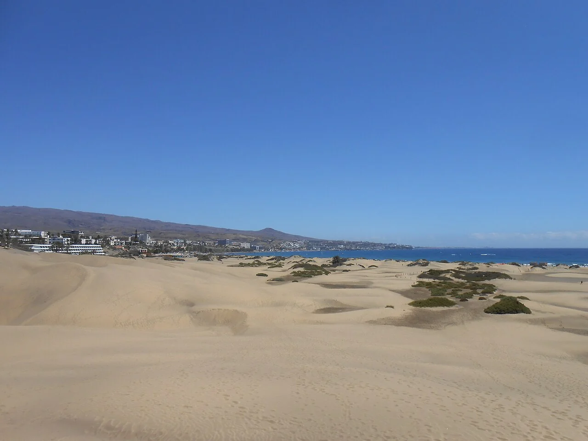

Maspalomas
Grande Canarie, Espagne · surf, bodyboard, baignade

Au sud de Grande Canarie, la plage longe un paysage de dunes et le phare de Maspalomas. Les zones de baignade et de glisse se répartissent le long de ce littoral très fréquenté.
- Lieu
- Grande Canarie, Espagne
- Niveau
- Variable selon les conditions
- Activités
- surf, bodyboard, baignade
- Type d'eau
- Mer / océan
- Coordonnées
- 27.74, -15.59 (position approximative du secteur)
Ouvrir dans Ocean Buddy Télécharger sur l'App Store
Source : Office du tourisme espagnol.